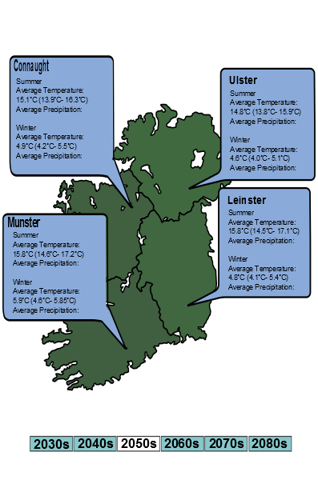

Examples
N.B. Tested in Chrome and Firefox.- Plot projected and reference winter model average temperatures for Cork
- Plot projected spring temperatures for Kilkenny averaged over decades
- Map of 2050 summer temperature data per county - linear shading w.r.t. 1961-1990 baseline
- Same as above but PNGIE compatible
- CSV download of 2021 pecipitation values by county based on Hadley Centre Global Environmental Model using emissions scenario RCP45
-
Map of % difference in 2 metre temperatures from 2021 to 2035
per province
- Map of 2040 yearly temperature data per county - quartile shading (slow)
- Bar chart comparing projected temp for different model runs
- Table output for all Winter 2027 data
See Also
Credits
Reporting an issue
You can use the GitHub issue tracker if something is obviously wrong. You'll need to send me your id once you've registered.News
Events
FAQs